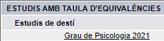

Matrícula del grau de Psicologia
1. Qüestionari d'ampliació de dades
Ruta del Campus Virtual: Tràmits que pots fer/ Fes la matrícula / Emplena el qüestionari per al tutor o tutora.
Amb aquest qüestionari el tutor o tutora et podrà conèixer millor i assessorar-te en funció de les teves necessitats. Per aquest motiu, et recomanem emplenar tots els camps del qüestionari.
2. Proposta de matrícula

- La matrícula és semestral. Pots consultar el pla de semestralització i el pla docent de cada assignatura a l'espai Més UOC / Plans d'estudis / Grau de Psicologia (pla nou) del Campus Virtual.
- Nombre d'assignatures. Es recomana no matricular-se de més de tres assignatures el primer semestre, ja que la dedicació és d'unes 8-10 hores setmanals per a cada assignatura.
- Anglès B2.1 i B2.2. Aquestes assignatures no són per a principiants. Per cursar-les es recomana tenir un nivell mitjà d'anglès (equivalent a un B1). Pots fer una prova de nivell.
- Avaluació d'estudis previs. Si has cursat altres estudis, potser pots reconèixer alguna assignatura. A l'espai Tràmits que pots fer / Avaluació d'estudis previs del campus pots consultar les taules d'equivalències. En cas de dubte, no et matriculis d'assignatures susceptibles de reconeixement.
- Bisemestralització. Totes les assignatures de grau s'ofereixen els dos semestres, excepte e-Psicologia, que no està disponible per a nous estudiants.
- Si tens dubtes, consulta'ls amb el teu tutor o tutora.


- Les assignatures de cada paquet s'han coordinat perquè les dates d'entrega dels treballs no coincideixin.
- Et pots matricular d'un paquet sencer amb les tres assignatures, o parcialment, amb només dues assignatures.
| PAQUET 1 |
|---|
| Fonaments de recerca en psicologia (Bàsica) |
| Psicologia de la percepció i de l’emoció (Bàsica) |
| Processos psicosocials elementals (Bàsica) |
| PAQUET 2 |
|---|
| Psicologia del desenvolupament (Bàsica) |
| Psicologia de l’atenció i la memòria (Bàsica) |
| Informació i competència digital en psicologia (Optativa) |
Després de revisar les primeres orientacions, l'itinerari del grau i els paquets Espria, ja pots fer la teva proposta de matrícula a través de l'espai Tràmits que pots fer/ Fes la matrícula / Fes la proposta de matrícula del Campus Virtual.
Mitjançant aquest pas pots triar les assignatures que vulguis cursar perquè el tutor o tutora t'assessori. Un cop feta la proposta de matrícula el teu tutor o tutora la revisarà:
MATRÍCULA RECOMANADA
Si la teva proposta ha estat RECOMANADA, ja pots formalitzar la teva matrícula.

MATRÍCULA NO RECOMANADA
Si la teva proposta és NO RECOMANADA, seria adequat que revisessis els comentaris del tutor o tutora per tal d'ajustar la teva proposta.
No obstant això, només es tracta d'una recomanació; si ja l'has sospesat, pots formalitzar la matrícula tot i la "no recomanació".
3. Matrícula
Ruta del Campus Virtual: Tràmits que pots fer/ Fes la matrícula / Formalitza la matrícula.
Aquest formulari et permet formalitzar la matrícula en els estudis. Tingues en compte que, si no et matricules dins del període establert, perdràs la plaça i hauràs de sol·licitar de nou l'accés.
4. Documentació
Consulta quina documentació has d'aportar segons la teva via d'accés al grau a l'espai Tràmits / Requisits i documentació d'accés / Per fer un grau o màster universitari del Campus Virtual.
Tens deu dies per enviar la documentació. Ho pots fer digitalment o per correu postal (recorda que, des de tutoria, no validem cap mena de documentació):
DIGITALMENT
Només pots enviar la documentació digitalment si té validesa electrònica:
- Codi segur de verificació (CSV) vigent.
- Signatura electrònica de l'organisme oficial emissor.
Consulta aquesta infografia per saber què és un document amb validesa electrònica.

PER CORREU POSTAL
També en pots enviar una fotocòpia compulsada per correu postal. L'adreça on l'has d'enviar depèn d'on resideixis:
| A l'Estat espanyol | A l'estranger |
|---|---|
| Universitat Oberta de Catalunya Ref. Documentació d'accés Apartat de correus 21017 08005 Barcelona, Espanya |
Universitat Oberta de Catalunya Ref. Documentació d'accés Rambla del Poblenou, 154-156 08018 Barcelona, Espanya |
| El nom que indiquis al remitent ha de ser el teu. | |
Per compulsar la fotocòpia, t'has d'adreçar al centre que et va expedir el document, a un notari o a un organisme oficial amb l'original i la fotocòpia.
Els requisits mínims d'una compulsa són els següents: data, segell, signatura, càrrec i nom i cognoms de la persona que signa. Si el document conté informació per les dues cares, se n'ha de compulsar tant l'anvers com el revers.
Si no envies la documentació en el termini establert, el teu expedient es tancarà, se t'anul·larà la matrícula (pot tenir conseqüències econòmiques) i perdràs l'accés a les aules.
Terminis d'accés i matrícula
- 1a. assignació: del 12 al 19 de desembre de 2024
- 2a. assignació: del 9 al 14 de gener de 2025
- 3a. assignació: del 16 al 21 de gener de 2025
- El calendari és diferent en el cas de la via d'accés per a més grans de 40 i 45 anys i la convalidació parcial d'estudis estrangers. Pots consultar tota la informació i les dates concretes en el missatge que trobaràs en el Tauler de l'Espai de tutoria.
Recorda que, si no et matricules dins del període establert, perdràs la plaça i hauràs de sol·licitar de nou l'accés.
Canals d'atenció
Tutoria d'inici
Els tutors i tutores d'inici i de seguiment de la UOC acompanyen als estudiants al llarg de la seva trajectòria acadèmica i en les diferents etapes dels estudis de grau.
En els graus la tutoria té dues figures: els tutors i tutores d'inici, que t'acompanyen i t'orienten en la fase d'incorporació i al llarg dels dos primers semestres; i els tutors i tutores de seguiment, que t'acompanyaran a partir del tercer semestre.
El model d'aprenentatge de la UOC
- S'estructura al voltant d'un sistema de verificació dels coneixements que és virtual i que té un caràcter general, continu i formatiu.
- Permet adquirir els coneixements de manera progressiva i que l'aprenentatge es retroalimenti.
- És asíncron, dinàmic i flexible. No hi ha classes en línia; ni enregistrades, ni en diferit.
Sistema d'avaluació
L'avaluació a la UOC s'estructura mitjançant l'avaluació contínua i l'avaluació final. Descobreix les principals característiques per mitjà d'aquest vídeo:
És important que consultis en el pla docent de cada assignatura el seu model d'avaluació, ja que hi ha assignatures que únicament es poden superar a través de l'avaluació contínua.
Trobaràs més informació a l'espai Informació d'interès abans de fer la matrícula / Tots els plans d'estudis / Psicologia (pla nou) del Campus Virtual.
Avaluació d'estudis previs (AEP)
L'avaluació d'estudis previs (AEP) és el tràmit que et permet reconèixer estudis fets a la mateixa UOC o en una altra universitat o centre. L'has de sol·licitar des del Campus Virtual, a l'apartat Tràmits / Reconeixements i convalidacions / Avaluació d'estudis previs.
En el Manual del tràmit d'avaluació d'estudis previs pots consultar què cal fer en cada pas per completar la sol·licitud.
Taules d'equivalències
Pots veure les taules d'equivalències a l'espai Tràmits / Reconeixements i convalidacions / Avaluació d'estudis previs (AEP) / Pas 1: Consulta les taules d'equivalències del Campus Virtual.
Recorda seleccionar l'opció Grau de Psicologia 2021, que es correspon amb el pla d'estudis actual:

Crèdits branca
Pots estar exempt de cursar algunes assignatures bàsiques del grau de Psicologia si compleixes els requisits que es detallen a continuació:
- Tenir un dels estudis següents: una diplomatura, una llicenciatura, una enginyeria, un grau finalitzat o un grau no finalitzat.
- Haver cursat una titulació de la mateixa branca de coneixement que el grau de Psicologia de la UOC (branca de Ciències de la Salut). Aquest tipus de reconeixement s'anomena reconeixement per crèdits branca:
- Si pots convalidar assignatures bàsiques per crèdits branca, has de sol·licitar l'avaluació d'estudis previs (AEP). Recorda que és important que NO et matriculis de cap assignatura que pugui ser susceptible de convalidació fins que no tinguis la resolució de l'AEP.
- Tingues en compte que els reconeixements de crèdits branca no es mostren a les taules d'equivalències; només apareixen a la resolució de l'AEP amb el concepte Matèria Psicologia Aplicació art.13.a) RD1393/2007.
- Assignatures que poden quedar exemptes de cursar per crèdits branca:
| Descripció de l'assignatura | Crèdits | Reconeixements equivalents (que apareixeran al potencial de matrícula) |
|---|---|---|
| Psicologia del desenvolupament: infància | 6 | Matèria Psicologia Aplicació art.13.a) RD1393/2007 |
| Fonaments de recerca en psicologia | 6 | Matèria Psicologia Aplicació art.13.a) RD1393/2007 |
| Processos psicosocials elementals | 6 | Matèria Psicologia Aplicació art.13.a) RD1393/2007 |
| Psicologia de la percepció i l'emoció | 6 | Matèria Psicologia Aplicació art.13.a) RD1393/2007 |
| Psicobiologia I | 6 | Matèria Psicologia Aplicació art.13.a) RD1393/2007 |
| Recerca quantitativa | 6 | Matèria Psicologia Aplicació art.13.a) RD1393/2007 |
| Psicologia de l'atenció i la memòria | 6 | Matèria Psicologia Aplicació art.13.a) RD1393/2007 |
| Psicobiologia II | 6 | Matèria Psicologia Aplicació art.13.a) RD1393/2007 |
| Psicologia de la salut | 6 | Matèria Psicologia Aplicació art.13.a) RD1393/2007 |